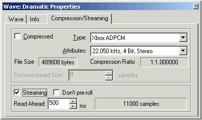
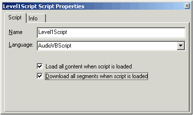
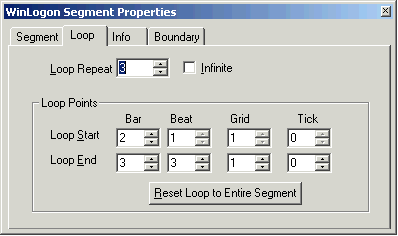
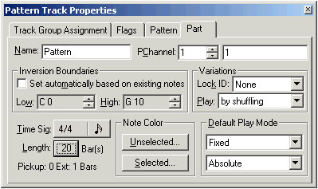
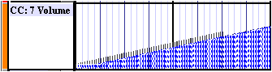
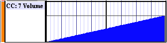

By Scott Selfon, Audio Content Consultant, Content and Design Team, Xbox Advanced Technology Group
Often, many subsystems are competing for the finite resources of a console's hardware. This chapter focuses on ways to get the most bang for your buck, with special focus on how to get high quality sounds out of a minimized resource footprint using the unique features of the Xbox™ video game system from Microsoft. We'll sort these areas based on what the optimization goal is: hard disk/game disc footprint, run-time memory footprint (UMA), and CPU overhead.
As always, if you have any questions on the topics presented here, or suggestions/requests for future topics, please contact content@xbox.com.
Perhaps more critical than the size of audio resources on disk is the size of resources allocated in the 64 MB of UMA. Of course, file size optimizations will generally translate into memory optimizations, as we will discuss below. Similarly, taking advantage of the ability of the Xbox MCP to perform real-time effects, filtering, mixing, and ADPCM decode will often minimize the size of wave data needed in memory. Several other techniques can help maximize the amount of audio content you can squeeze into a small memory footprint.
For wave playback in XACT, Microsoft® DirectSound®, and Microsoft® DirectMusic®, you can take advantage of streaming to minimize your footprint. The tradeoff is that you now require some amount of bandwidth on the hard disk and/or game disc. The read-ahead buffer size (which is the actual amount of memory you're using) can be set programmatically in XACT and DirectSound, or within DirectMusic content.

Illustration Setting a wave to be Streaming from its property page in DirectMusic Producer for Xbox.
XACT provides Xbox-optimized streaming functionality, which you can incorporate into your title by using the XACT engine or by using the sample code provided with the WaveBankStream sample. By using sector-aligned waves, XACT wave banks can be streamed asynchronously and without buffering. You can successfully streaming more than 140 stereo ADPCM waves simultaneously off the hard disk (less for PCM, as bandwidth limitations begin to come into play). XACT provides the opportunity to use two kinds of streaming (specified within the content as authored in wave banks): non-primed and primed (zero latency). Non-primed streaming waves will incur latency when playback begins as they are read into memory. However, they will have no memory footprint until they begin playing. The very beginning of primed (zero-latency) waves will be read into memory when the wave bank is registered by XACT. This means that the waves can be played immediately when requested, with no latency. As the beginning of the wave is played, the remainder of the wave begins to be streamed into memory, allowing for very large footprint wave banks to remain on disk rather than in memory. Typically, primed wave banks will be placed on the hard disk instead of the DVD due to read ahead considerations.
DirectMusic will generally "prime" the wave (read in the size of the read-ahead buffer1) when it is downloaded, to avoid the latency that would otherwise be associated with a disk seek at the time you wanted to play it. If such latency is acceptable for your title, you can select Don't pre-roll to bypass the initial priming. Similarly, you can specify in XACT wave banks whether individual waves should be primed ("enable zero latency streaming" option).
Note that streaming is not available for DLS collections; instruments used by a segment must be physically present in memory. In addition, DirectMusic does not support sample-accurate looping of streamed waves.
Streaming brings up the issue of caching. Remember that latency for playback off of a game disc is significantly higher than playback off of the hard disk (which is in turn higher than playback off of the UMA). Depending on the specific title, predictive caching can aid with this: content that is going to be fairly important to maintain low latency playback on can be streamed from the game disc onto the hard disk, from where it can in turn be streamed or fully loaded into memory. Of course, when latency doesn't matter as much (for instance, a public address system announcer in a sports title), you could just stream directly from the game disc. In both cases, make sure you are communicating your bandwidth requirements, because graphics may be counting on streaming from them as well. Interleaved graphics and audio data layout on the game disc for a scene can aid with potential bandwidth issues, as can placing more bandwidth-intensive information on the outer rings of the game disc.
Remember that the title libraries used will take up space in memory as will the content authored. But unlike on a Microsoft® Windows® PC, Xbox Title Libraries are only linked and compiled into a game as needed. Furthermore, features that are unused do not need to be compiled in at all. So for instance, if you use only low level DirectSound features, DirectMusic will not be linked in.
On the topic of 3-D, two different coefficient sets are offered for use on Xbox. The larger set, which is approximately 70 KB in size, provides a full 3-D positioning coefficient table. The smaller set, approximately 6 KB in size, is "azimuth-only." That is, sounds in the horizontal plane will be processed using Head Relative Transfer Function (HRTF) technology, but elevation/declination will be processed only with attenuation.
The run-time size in DirectSound is optimized based on library calls made. DirectMusic can be optimized by using the Content Analyzer tool to scan what libraries are required to play the authored content.
For more details on audio library optimization, see UMA Audio Use Considerations in Xbox Audio Hardware of the Best Practices Guide.
While real-time effects programs run on board the Global Processor of the Xbox MCP chip, some of them require a "scratch" space for wave data manipulation. Such scratch spaces are chunks of memory used by the effect for data manipulation. The primary user of scratch space is the I3DL2 Reverb. We provide two different versions of the reverb to allow you to balance the quality of the reverb (48 kHz versus 24 kHz) with your memory footprint restrictions (580 KB versus 380 KB).
Microsoft® DirectX® Audio scripting provides a subset of the functionality found in the DirectMusic and DirectSound libraries. One feature that it does provide to the content creator is the ability to manage content loading, downloading, and unloading. While this process could be managed by the developer, often the content creator is more aware of the footprint requirements of various pieces of content.
DirectX Audio scripts (.spt files) provide the opportunity to automatically load and/or download all of the content they reference when the script is loaded, or for all the content downloading to be managed manually by the content creator or developer. This is covered in more detail in a separate white paper.

Illustration The script property page provides the content creator with the ability to manage content loading and downloading from the script.
The Xbox game disc allows for more than 7 GB of data. However, remember that game disc playback can incur fairly high latency, and you may be competing with graphics and other media that your developer also wants to stream from the disc. The hard disk provides a solution for lower latency playback. A running title is granted a 750-MB utility region (XT:\) that can be used however you wish. Loading some audio assets onto this utility region is a common practice. Remember that this space can be reformatted when the Xbox console is restarted with another title, so do not depend on data to be there between uses of the console.2
In both the cases of game disc and hard disk use, we can run into footprint or bandwidth limitations that may make us consider optimizing our audio content in some manner. In particular, because at least a streaming buffer must be present in memory (if not the entire wave), we want to ensure that the data we read will fit into the memory area our developer has granted to audio.3
The following techniques will help limit the on-disk footprint (which of course gives the potential of reducing the size of the wave data as it is later played in memory).
Pros:
Cons:
Comments:
Pros:
Cons:
Comments:
Pros:
Cons:
Pros:
Cons:
Pros:
Cons:
Of course, unless you choose to bypass the audio chip completely and write directly to the digital and analog outputs, everything you play will use the Xbox Media Communications Processor (MCP). But the processor provides the possibility for a lot more functionality than just hardware mixing, ADPCM decompress, and sample rate conversion, often allowing you to do a wide range of manipulations on much smaller source waves, and generally with a minimum of CPU overhead.
Pros:
Cons:
Pros:
Cons:
Pros:
Cons:
Unlike on the PC, DLS collections on the Xbox are loaded into memory in their entirety. So be sure to remove any instruments that you do not use from your DLS collection before loading it.7 Microsoft® DirectMusic® does allow you to use multiple DLS collections at once, so long as their total size is less than the 8 MB limit imposed by the Xbox MCP for DirectSound buffers.
To avoid latency in downloading instruments, it is generally recommended that DLS collections that you are preparing to use be cached to the hard disk.
The primary way to minimize your DLS collection size is to get a good looping tool and take advantage of the DLS-2 filtering and articulation support within the Xbox audio hardware. Rather than pre-rendering things like reverb, filter sweeps, and pitchbends into long waves, let the Xbox MCP manipulate your (smaller) source content in real time.
Many of the methods mentioned above for wave file size optimization apply here: sample rate reduction, bit depth, and so on. DLS support for compression deserves a separate mention: only Xbox ADPCM is currently supported in DLS collection waves; WMA and generic XMOs cannot be used for DLS collections. Furthermore, the DLS specification currently allows only for mono compression, so any stereo waves will have to remain as PCM. Of course, most instruments and 3-D positioned elements are mono to begin with, but it's something to keep in mind.
One other note with regard to DLS waves: as a hardware synthesizer, the Xbox MCP has certain limits as to how much it can repitch a wave for playback. The number varies with sampling rate, but at 22 kilohertz (kHz) and below, the value is roughly four octaves, and at 48 kHz it is just under two octaves.
DirectMusic provides several opportunities to optimize file size, particularly when compared to the traditional MIDI format. Of course, these files are generally trivial in size next to the wave data that is being used, but bytes or kilobytes over several pieces of content can definitely make a difference.
In a traditional MIDI score, the concept of looping is handled by either the developer or the sequencing software but generally isn't portable within the format itself. Often for more advanced looping, the content author builds the loops right into the content via Copy and Paste commands. DirectMusic supports several forms of looping that can be set by the content creator and/or the developer as the situation dictates. The most basic form is segment looping. From a segment's property window, select the Loop tab.

The loop points can also be changed by the developer, though the new loop points will not apply to an already playing segment until it is restarted.
In some cases, a traditional MIDI score may have entire tracks that consist of several bars of looped content. DirectMusic allows you to maintain a single copy of this content in pattern tracks and style patterns, which gives the double benefit of file size optimization and only having to worry about editing one instance of the content to affect each and every loop. When you look at the property page for a pattern track, notice that each part has an independent length. Any parts shorter than the pattern itself (or in the case of a segment, the length of that segment) will repeat as necessary to fill the rest of the length. For instance, if I have a five-bar pattern and a two-bar part, it will play a total of two times and play its first measure a third time.8

Illustration The property page for a pattern track part. Note the Length field, which can be independently set for each part.
A primary source of MIDI data is often continuous MIDI controller information. A volume change from 0 to 127 is in many cases composed of 128 discrete values; in some instances, it can even be composed of additional (redundant) values. DirectMusic provides a method for specifying actual curve information—a starting value,9 an ending value, and a curve shape (exponential, linear, and so on).
To optimize an imported MIDI controller curve in DirectMusic Producer, select all of the individual points of the curve by drag-selecting them, then right-click and choose Convert to single curve. Note that DirectMusic does not support "multi-point" curves, so this function effectively draws a line from the first point selected to the last point, deleting the interior points.

Illustration An imported MIDI controller curve composed of many individual controller events...

Illustration ...and the single curve generated from them by choosing Convert to single curve.
Upon playback, MIDI controller information is regenerated dynamically from the curve, though DirectMusic will avoid sending redundant controller messages or large numbers of messages that would occur at the exact same (quantized) time.
Upon playback, MIDI controller information is regenerated dynamically from the curve, though DirectMusic will avoid sending redundant controller messages or large numbers of messages that would occur at the exact same (quantized) time.
Particularly when authoring style-based content for interactive playback, a common technique is to have several "intensity levels" make use of the same basic bed of music while incrementally adding instrumental lines. Rather than maintain many copies of what is essentially identical content, you can use part linking.10 Linking two or more parts together makes them reference a single copy of the musical information. If you want, they can be on different performance channels (that is, played by different instruments). They can also be in the same or different patterns. Editing the part in one place will affect every other pattern that contains that part. This can of course significantly reduce the size of a style file. The same technique can be used in the pattern tracks of segments.
Illustration How to set up a new part to link to an already authored part in the Add Pattern Part(s) dialog. The "L" in a part indicates that it is linked to another part.
For a more complete discussion of audio performance characteristics from a developer's point of view, please see the DirectSound Performance white paper. In this guide, we will focus on performance aspects that can be controlled or influenced by the content author.
Every library call will incur some amount of overhead from the CPU. However, many aspects of actual playback and signal processing can be handled by the chip itself. The following aspects of audio playback can generally be considered "free" (once their parameters are set up and/or methods are called by the developer) from a CPU point of view:
The following aspects of audio playback will incur CPU hits. Note that except where noted, the CPU hit generally occurs when the method is called (that is, it is not a continuous CPU load):
From the content creator's point of view, the primary way to optimize audio footprint will come back to the authoring process and the wave files delivered to the developer. Tradeoffs between performance and quality are inevitable, but by using some of the methods discussed above and by determining a budget (and the course of an implementation plan for content development) early in the process, you should be able to begin to take full advantage of the audio possibilities present in the Xbox without breaking the bank as far as memory footprint.
If there is an area not addressed here that you would like to see presented as a sample, or if a particular process is blocking your progress on a project, please dont hesitate to let us know at content@xbox.com.
For more information about topics presented here, please consult other chapters of the Xbox Audio Best Practices Guide, the Xbox Development Kit documentation, or the white papers on Audio Designers Corner, or send an e-mail message to content@xbox.com.
1 Because you can play waves from an offset, the "primed" wave data may not necessarily be the start of the wave. This is why loading a streamed wave may not allow you to play another instance of that streamed wave without loading its segment as well.
2 In actuality, the Xbox keeps track of the last three titles played and will store their utility regions. The fourth new title will "push out" the oldest utility region, reformatting it for this title&'s use.
3 Remember that the Xbox has a unified memory architecture (UMA), which means the 64 MB of memory can be used as your title sees fit: the graphics processor, audio processor, and the CPU all can access the memory area.
4 As with most other ADPCM formats, ADPCM compressing an 8-bit source wave results in the same size compressed wave as a 16-bit source wave. Hence our codec's support for 16-bit sources only.
5 It is feasible that a developer familiar with Motorola 56300 programming could create a program to run in the Global Processor (GP) of the Xbox Media Communications Processor to provide hardware-based decoding of a format. Limitations to keep in mind would be other instructions that must reside in the finite memory area of the GP (at the very least, a basic program that routes audio to the GP mixbins to make any sound) and the way that the chip processes data (generally in 32-sample chunks).
6 For more on variability in DirectMusic and how variable content is authored in DirectMusic Producer, see Variations: Adding Basic Variability to Audio Content in DirectMusic Producer
7 Unlike on the PC, there is no difference between load and download as used by DirectMusic. Loading wave data on the Xbox implicitly prepares it to be played and no subsequent call is needed prior to using the data.
8 Note that, due to a bug in Windows DirectX 8.0, pattern track parts shorter than the segment will often fall silent when the segment loops. This is not an issue on Xbox, so use Xbox Experimenter to audition content that takes advantage of this feature.
9 You can additionally author a curve to "use current," which will ignore the start value and create a dynamic controller curve from the current value of a controller to the destination value. For more information, see the white paper Crossfade Solutions Using DirectMusic: Volume Controller Curves, Audiopaths, and DirectX Audio Scripting.
10 For more information about styles, see the white paper Style-Based Playback: An Introduction to DirectMusic Style Files. A full discussion of part linking is presented under the topic Using Groove Levels in that paper.